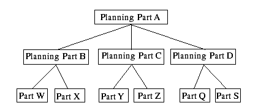

A planning bill of material indirectly forecasts or plans several parts by allowing you to manipulate the relationship between the parent and subordinate parts and by providing a single forecast or plan for the parent part. In some cases, planning bills are multi-level. In this case, manipulating the top most parent’s forecast results in all forecasts at the lower levels.
Planning parts are not real parts. To avoid putting planning parts into the main part table, VISUAL uses a separate table, PLANNING_PART. This permits any number of levels to exist in the planning part table through the planning bill of material table, PLANNING_BOM. At the lowest level, the planning bill of material refers to the actual part table. This level can have no further planned parts below it.
Example

In this example, there are two levels of planning parts and an additional level of real parts. There is no requirement that all real parts occur at the same level, only that they be the bottom most level.
Each relationship contains a percentage that dictates the quantity of subordinate parts for each parent part. This allows the system to determine the quantity of each subordinate part as a function of the parent part forecast or plan.
You specify:
Part ID |
Percentage |
Planning part A |
|
Planning part B |
10% |
Planning part C |
25% |
Planning part D |
65% |
VISUAL, given the following forecast, calculates these subordinate forecasts:
ID |
Week1 |
Week2 |
Week3 |
Week4 |
Week5 |
Week6 |
Week7 |
A |
1000 |
1000 |
1400 |
950 |
3500 |
4500 |
2500 |
B |
100 |
100 |
140 |
95 |
350 |
450 |
250 |
C |
250 |
250 |
350 |
238 |
875 |
1125 |
625 |
D |
650 |
650 |
910 |
617 |
2275 |
2925 |
1625 |
When calculating these values, VISUAL deals with rounding loss and gain. The last part receives the balance from the parent part. This means that percentages must total 100 at each set. This is evident in Week 4 above.
The scale of forecast values is determined by the unit of measure scale of the part in question. For instance, if a part is measured in EA, the scale is 0, therefore; the numbers will be integers. If a part is measured in LBS and the scale is 2, the numbers will be decimal numbers having 2 places after the decimal point.
You can use Planning Bills of Material to derive either lower level forecasts or lower level master schedules. Edit a planning part’s forecast causes calculation of the lower level planning data immediately. There is no batch step, such as MRP, that needs to take place.